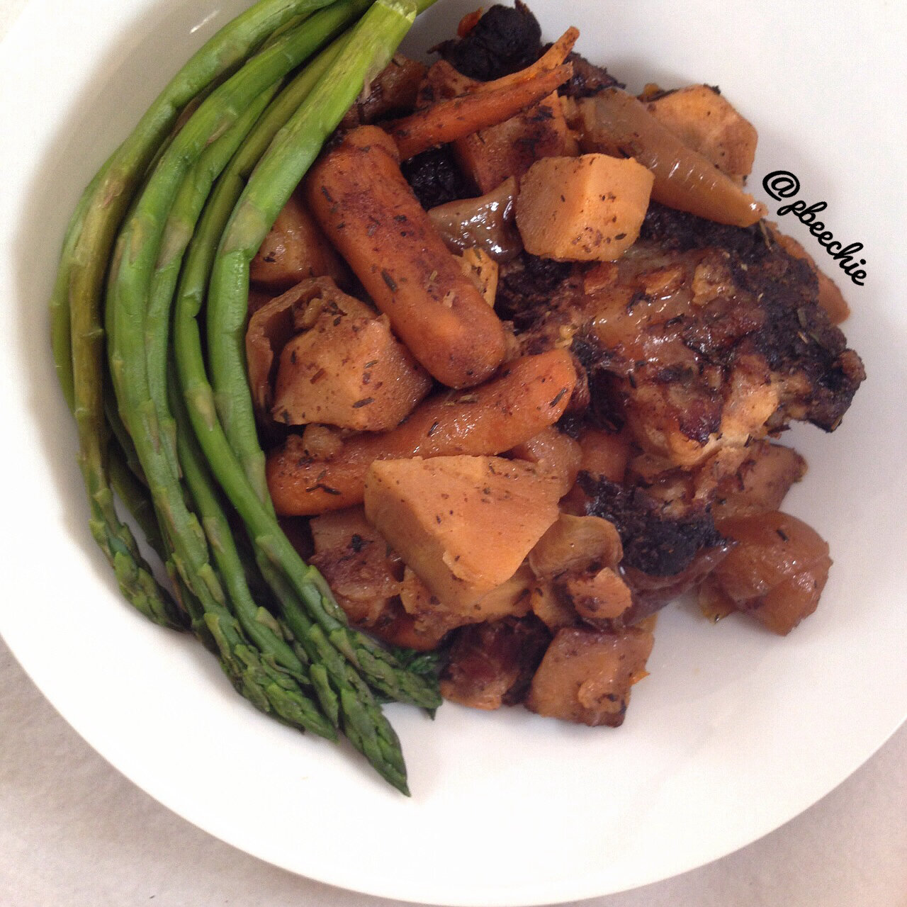

Oxtail Stew (Crockpot)
I've wanted to try oxtail for a while but. Two issues. 1 - I didn't know where to buy oxtail. and 2- I didn't know how to prepare oxtail.... But I saw my friend catwon post a base recipe and used it as guidelines to make mine! It was sooooo good and flavorful. And takes all of about 10 minutes to prep. Just chop a few things, add to crockpot, and let it do it's magic for 10-12 hours. You could probably sub any meat you want, too! Jesse and I were dying over the wonderful smells within the apartment, waiting for dinner time. I need moorreeeee. 
An added plus, it's paleo!
- 6 oxtail bones (1.25 pounds)
- 1 large onion
- 2 large parsnips
- 6 large garlic cloves
- 1 lb baby carrots
- 1 TBSP coconut oil
- 3 TBSP balsamic vinegar
- 2 TBSP apple cider vineger
- 1 cup no salt added chicken broth
- Spices (thyme, paprika, chili powder, cumin, black pepper)
First, toss your oxtail into your slow cooker. Then, roughly chop your onion into large chunks and add it. Peel and chop the parnsips and add it. Dice your garlic cloves and add it as well. Next, toss in your baby carrots, coconut oil, balsamic vinegar, apple cider vinegar, and chicken broth. Finallyyyy, add a ton of spices. I didn't measure the spices but basically attacked the crockpot with the spices. I listed them in the order of what I used most of. It was roughly 1-1.5 TBSP thyme, 2 tsp each of paprika, chili powder, and cumin, and about 1 tsp black pepper. Just whatever your prefer! Then cover the crockpot and let cook on a low heat for 10-12 hours. I let mine cook overnight for 13 hours, then reduced it to "keep warm" for another 10 hours until dinner time. The longer it stews, the yummier it is if you ask me!SERVE! :D